Use the original pair on overlap · Two detectors running concurrently on the recording clock


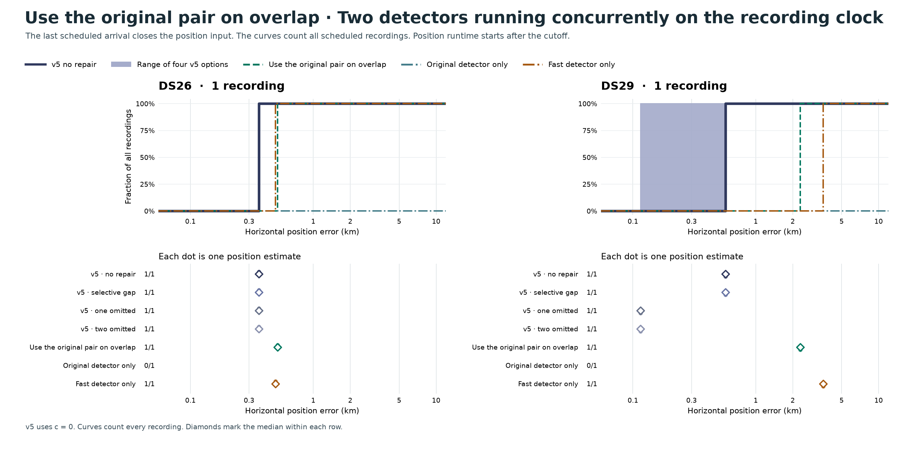
Exact scheduled recording and offer rosters for each receiver change.
Roof · Fitted calibration PDFRoof · Fitted calibration dataTransfer · Fitted calibration PDFTransfer · Fitted calibration dataRoof · Zero calibration PDFRoof · Zero calibration dataTransfer · Zero calibration PDFTransfer · Zero calibration data


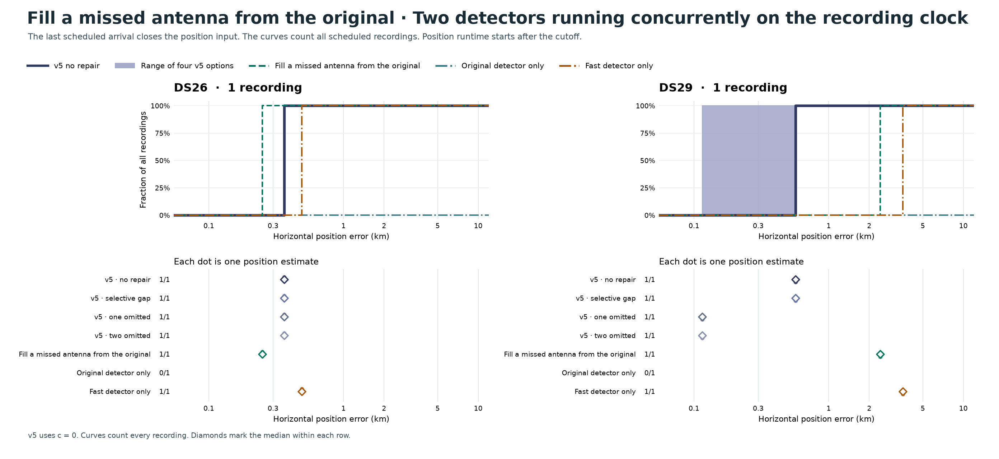


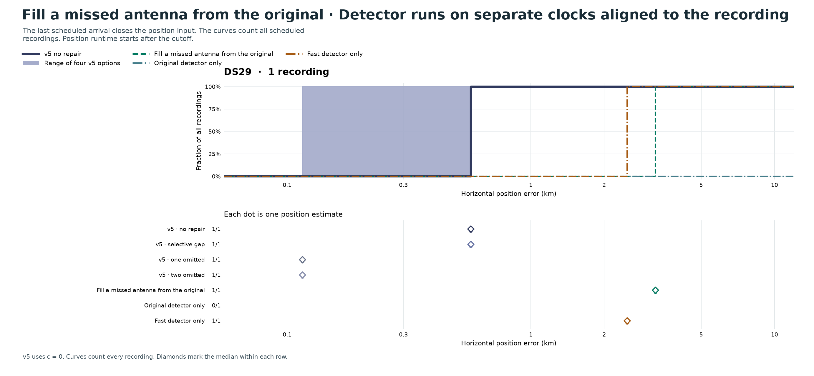
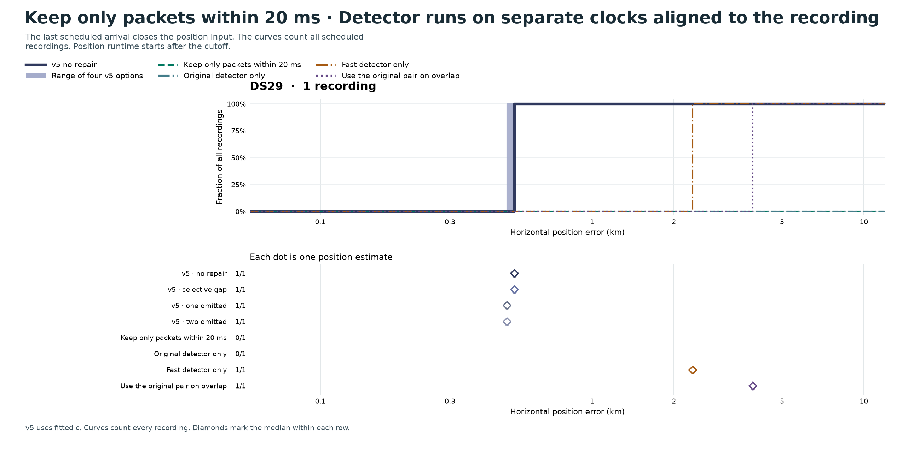


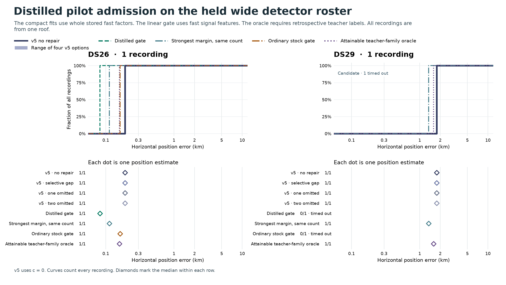
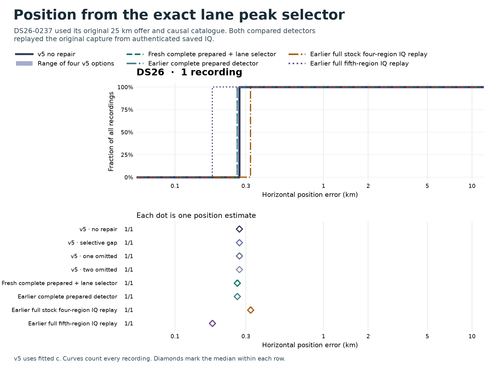
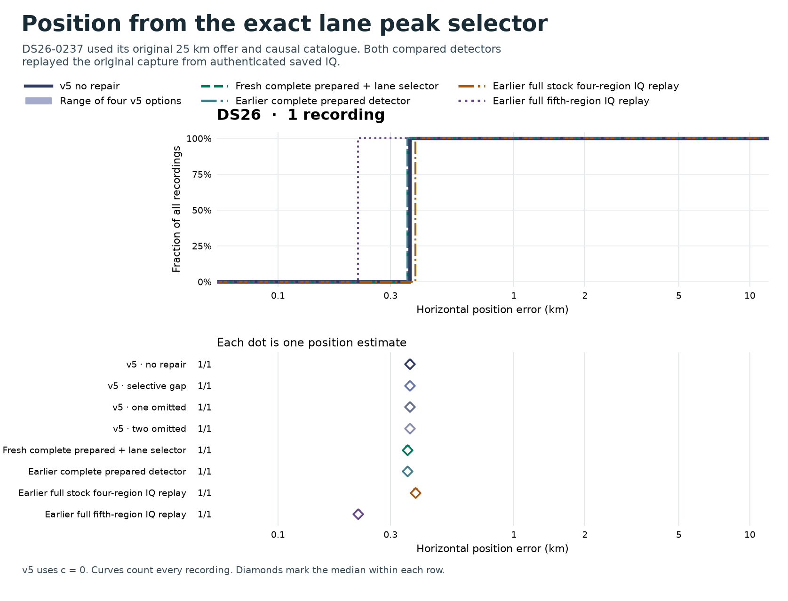
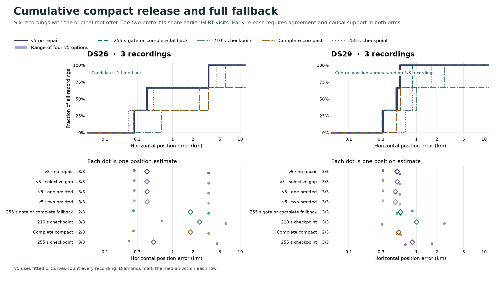
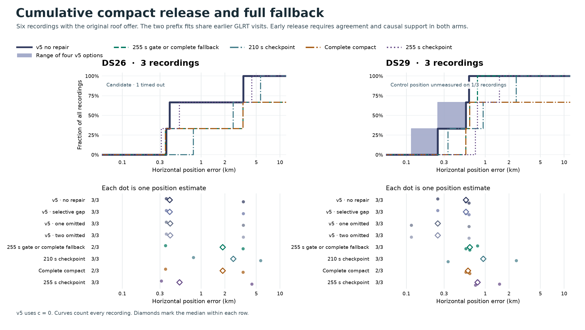

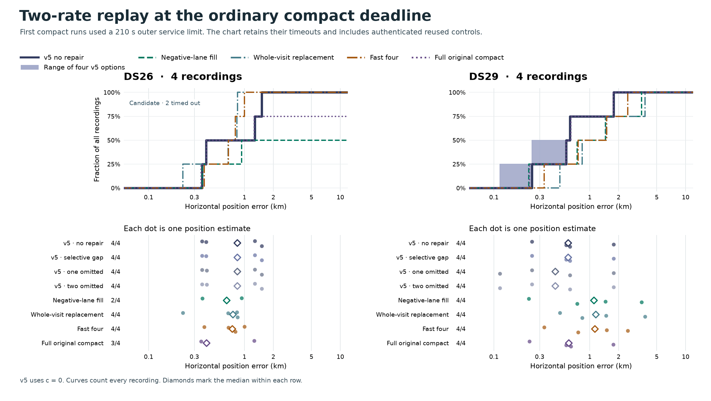
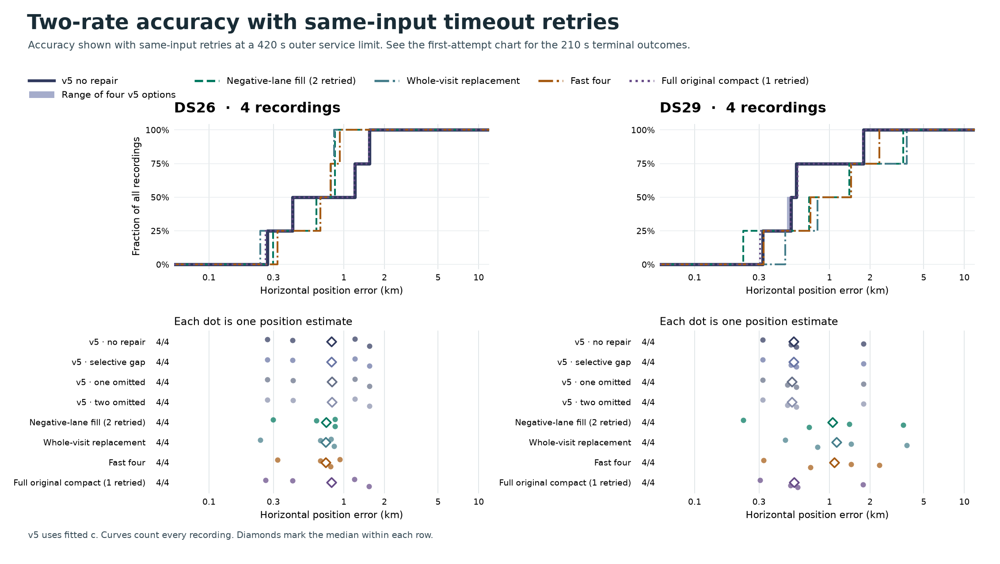
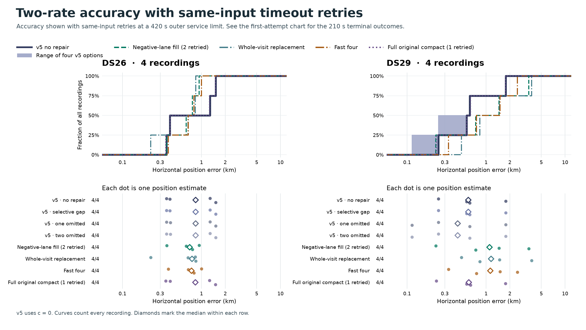

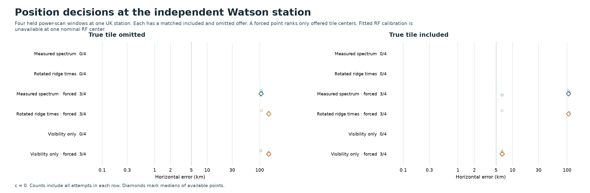

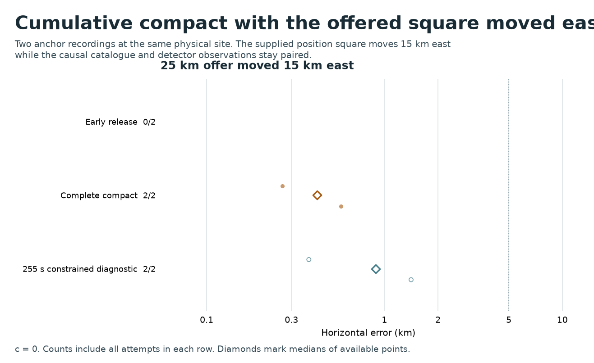